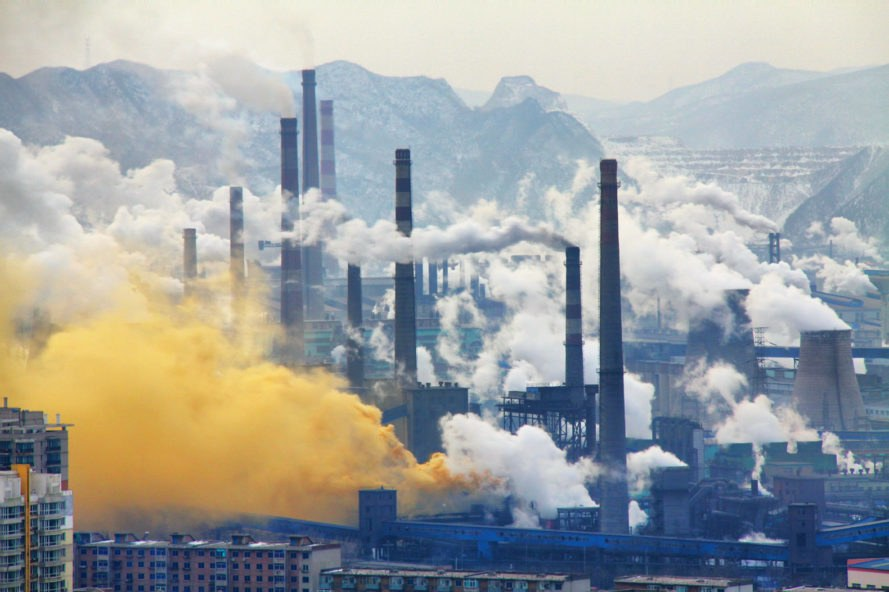
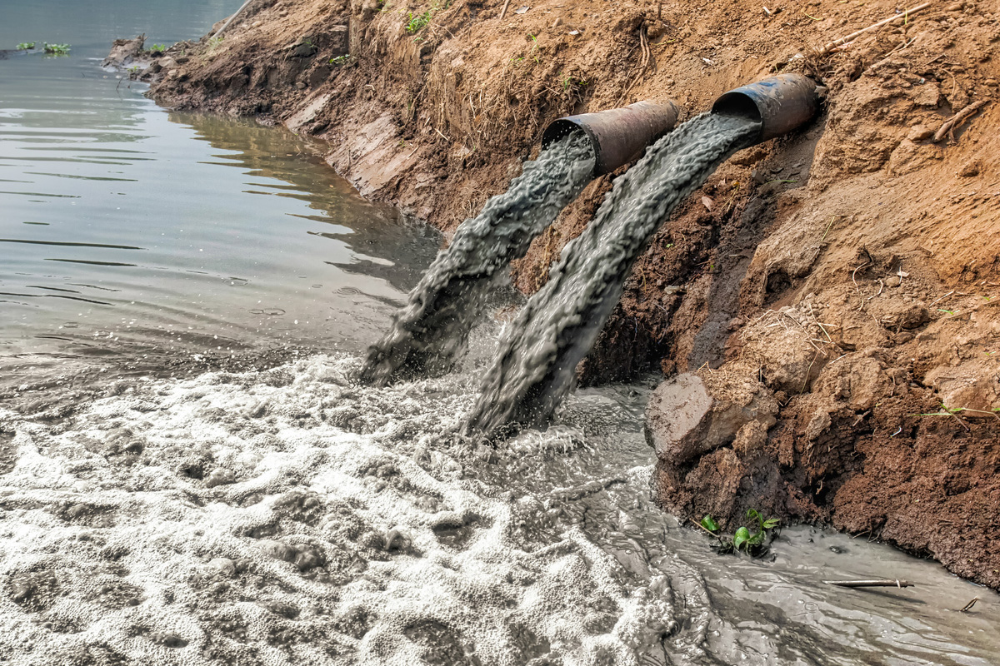
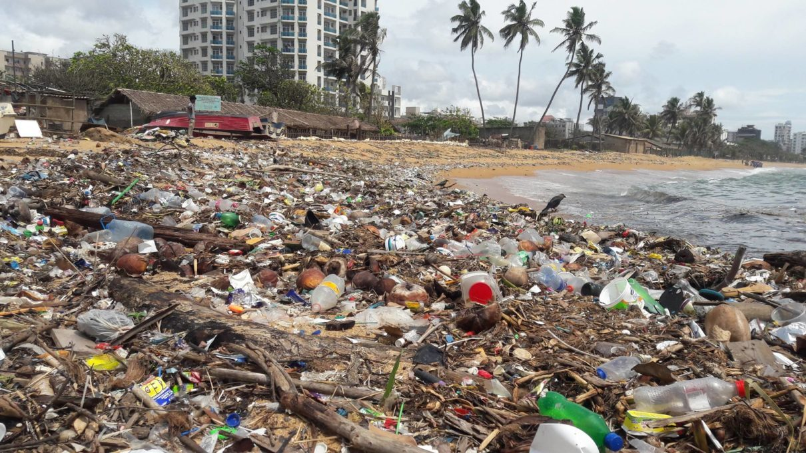
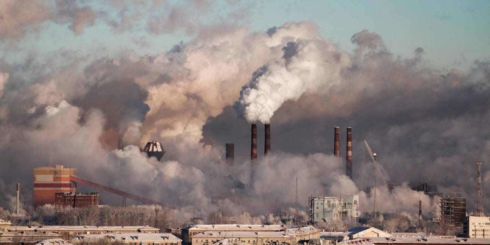
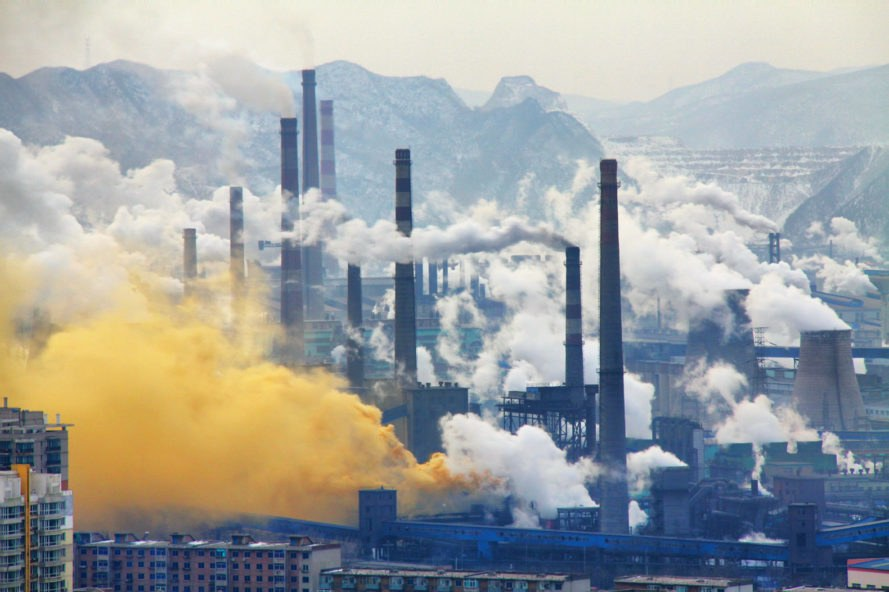
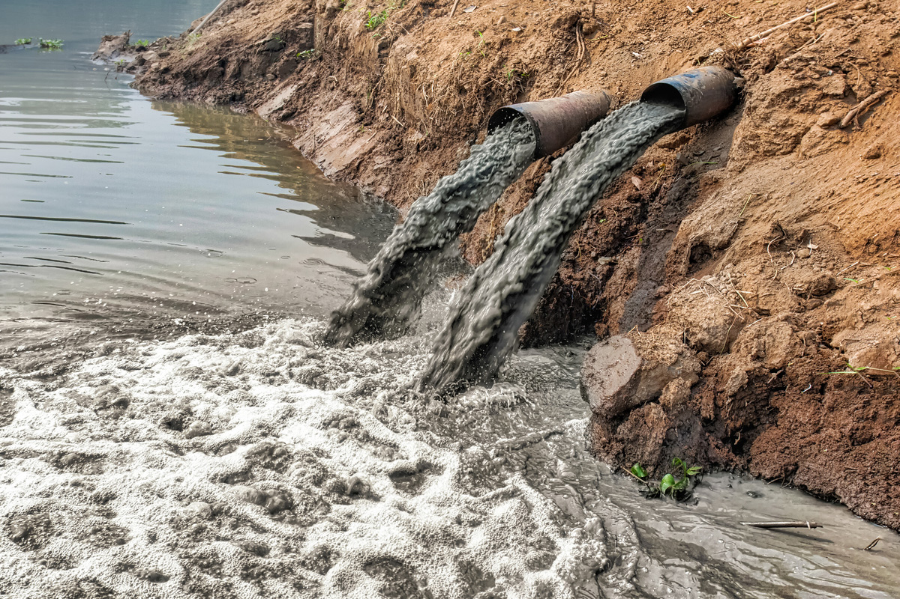
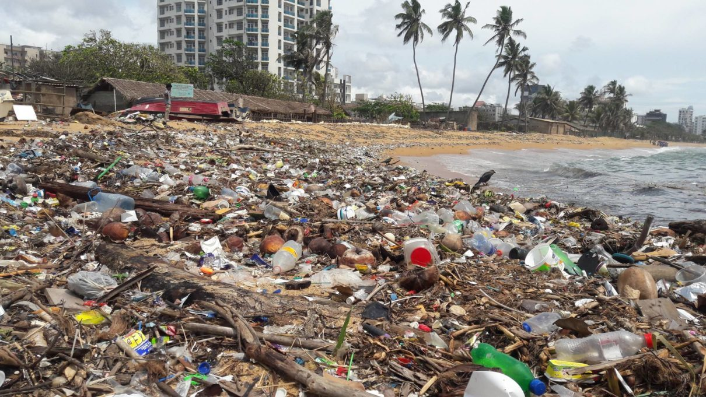
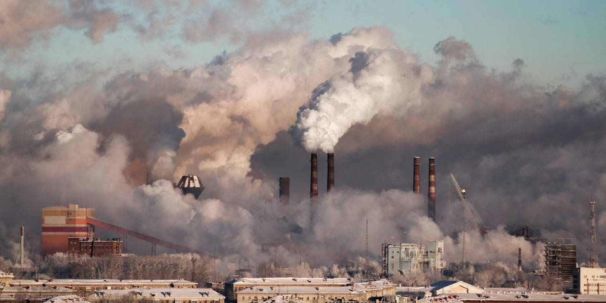

Impact prediction or forecasting is a technical exercise. It utilises physical, biological, socio-economic and cultural data to estimate the likely
characteristics and parameters of impacts (e.g. magnitude, spatial occurrence etc.). A range of methods and techniques may be
employed.
What is Environment Impact Assessment (EIA) ?
This is a question that needs to be answered as many just do not know. Even those who will be affected by numerous infrastructure projects that are in the pipeline do not know about it. It needs to be widely advertised so that people and stakeholders can voice their opinion and reservations. But in the midst of the pandemic is it going to be heard or even possible? It is ethically wrong for the government to make monumental changes that will impact the lives of the people during the pandemic. The country is worried about their health and security and this crisis should not be used as a distraction by the government to make such life altering decisions.
The EIA is an important regulation that prevents industrial and infrastructure projects from being approved or cleared without following the required safeguards. It looks at the potential impact that an industry would have at the environment and then a panel of experts would either grant or deny the clearance.
What are the drawbacks of the new Draft EIA 2020?
The new draft EIA Notification proposed by the Union government recently is a regressive departure from the 2006 EIA and would supersede it.
The objective of the draft is to be environmentally friendly but instead it is pro-industry and anti-people. This notification would cause a landmark shift in the way clearances are obtained in the country.
Firstly, it does away with the requirement of public consultation for a wide range of projects.
It takes away the voice of affected communities by exempting projects like irrigation, widening of national highways, ropeways, building constructions and so on from public participation. It also reduces the time allotted to public participation to expedite the process.
Industries are required to submit compliance reports twice a year which is now reduced to once a year. This proves to be a pro-industry clause that reduces the check on industries and their impact on our environment.
For instance, Dehing Patkai known as the Amazon of the East in Assam has been ravaged by illegal coal mining for several years by Coal India . The mining was done with clearances since 2013. It continues to do so and have still been granted a conditional clearance due to post facto approvals. This is deeply problematic as no one should benefit from their violations.
How does it affect local communities and on ground workers?
It is important to note that even though it is a national legislation, it was only published in Hindi and English and not in any other vernacular languages. The Delhi High Court did order for translated copies of the draft in other scheduled languages which has not been done yet. This clearly excludes local communities from public participation as they can’t file objections against something if they cannot understand it.
What can you do as a public against the notification?
It is important to note that by virtue of Article 21 it is our constitutional right to be a part of the democratic decision making process.
The Delhi High court has clarified that the last day to send in objections to this draft notification is August 11th 2020 . These objections will then be considered by the Union Government before passing the notification.
We are in the midst of a health and climate emergency and this draft notification EIA 2020 proposes a significant change in the structure of environmental law and process in the country.
The authorities have also taken down websites of three national environmental advocacy groups that launched digital campaigns and open letter movements against the notification. The collectives are Fridays For Future, Let India Breathe and There Is No Earth B. This is a transparent attempt at web censorship to silence the voices of youngsters and activists protesting against the draft.These websites were taken down without prior notice or reasonable expectation during the peak time of awareness and campaigning. It is a blatant violation of our freedom of speech and expression. This is also an indication that the authorities are scared of our voices and when they do try to silence it ,we should only raise our voices louder.
We must be made privy to information on a policy that defines our future and we must be allowed to be a part of the democratic decision making process.


 






